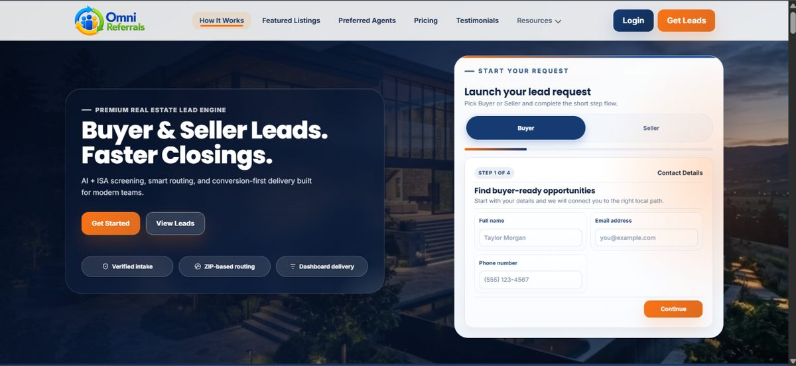
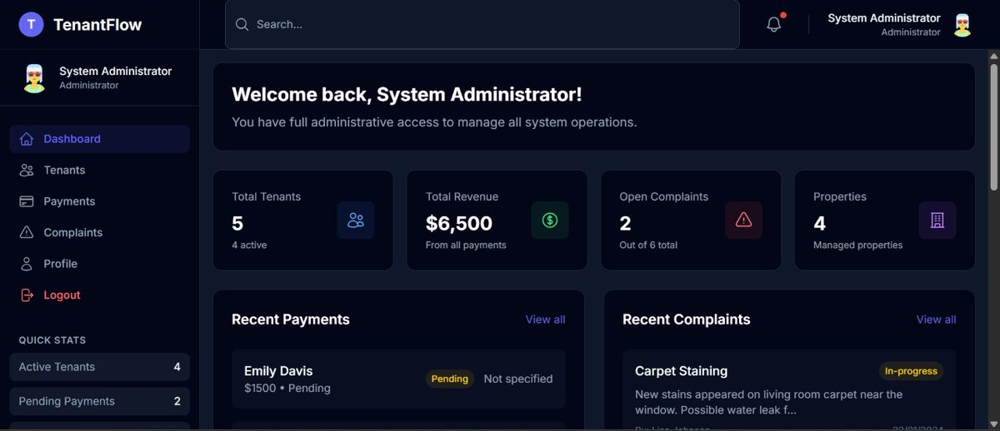
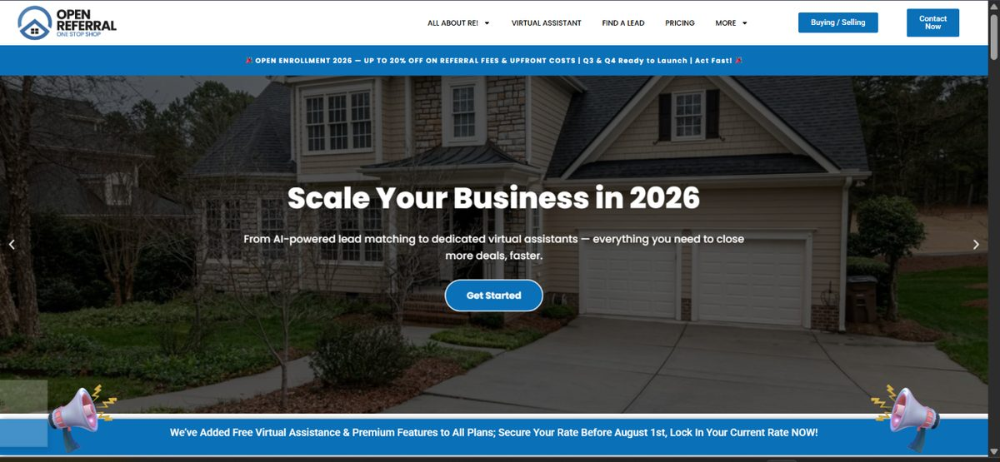

Four style directions
Same content, same structure, four different visual languages — so you're comparing style only. Everything else we built (18 pages, case studies, filters, SEO, the CV) stays exactly as it is. Tell me a number and I'll implement it across the whole site.
This file is style-directions.html, marked noindex and linked from nowhere.
Delete it once you've chosen.
Editorial Paper
Warm off-white paper, an italic serif headline, hairline rules and a lot of breathing room. The look of a consultancy or a design studio rather than a template.
Full Stack Developer
I build the web systems real estate businesses actually run on.
Laravel, React and WordPress — plus the technical operations that keep it all working after launch.

Laravel & PHP
Custom applications, APIs and admin dashboards.
Real estate web
Marketplaces, listings, search and lead capture.
Technical SEO
Audits, schema, Core Web Vitals, page speed.
Best for: recruiters and higher-budget clients. Strongest credibility signal of the four. Weakest if you want to look "technical" at a glance.
Swiss Signal
Hard grid, zero rounded corners, one loud accent doing all the work. Geometric sans, tight letter-spacing, heavy structure. Confident and a bit uncompromising.
Full Stack Developer / Tech Ops Lead
Web systems for real estate businesses.
Laravel, React and WordPress — plus the technical operations that keep it working after launch.

Laravel & PHP
Custom applications, APIs and admin dashboards.
Real estate web
Marketplaces, listings, search and lead capture.
Technical SEO
Audits, schema, Core Web Vitals, page speed.
Best for: standing out from every other dev portfolio. Most memorable. The hard edges divide opinion — some clients read it as cold.
Terminal Dark
Near-black, one electric accent, monospace details on labels and tags. The visual language of modern developer tools — Linear, Vercel, Raycast.
~/full-stack-developer
Web systems for real estate businesses.
Laravel, React and WordPress — plus the technical operations that keep it working after launch.

Laravel & PHP
Custom applications, APIs and admin dashboards.
Real estate web
Marketplaces, listings, search and lead capture.
Technical SEO
Audits, schema, Core Web Vitals, page speed.
Best for: dev agencies, CTOs, technical recruiters. Signals "current" instantly. Most common look among developers — and realtors respond to it least.
Indigo Depth
Bright and open, with soft indigo-to-teal light behind the hero, generous radii and gentle shadows. The familiar modern-SaaS look, done cleanly.
Full Stack Developer
Web systems for real estate businesses.
Laravel, React and WordPress — plus the technical operations that keep it working after launch.

Laravel & PHP
Custom applications, APIs and admin dashboards.
Real estate web
Marketplaces, listings, search and lead capture.
Technical SEO
Audits, schema, Core Web Vitals, page speed.
Best for: freelance clients and realtors — the widest commercial appeal. Friendliest of the four. Closest to a stock template look, so it stands out least.
Reply with a number — or mix them (e.g. “01 type with 03 colours”).